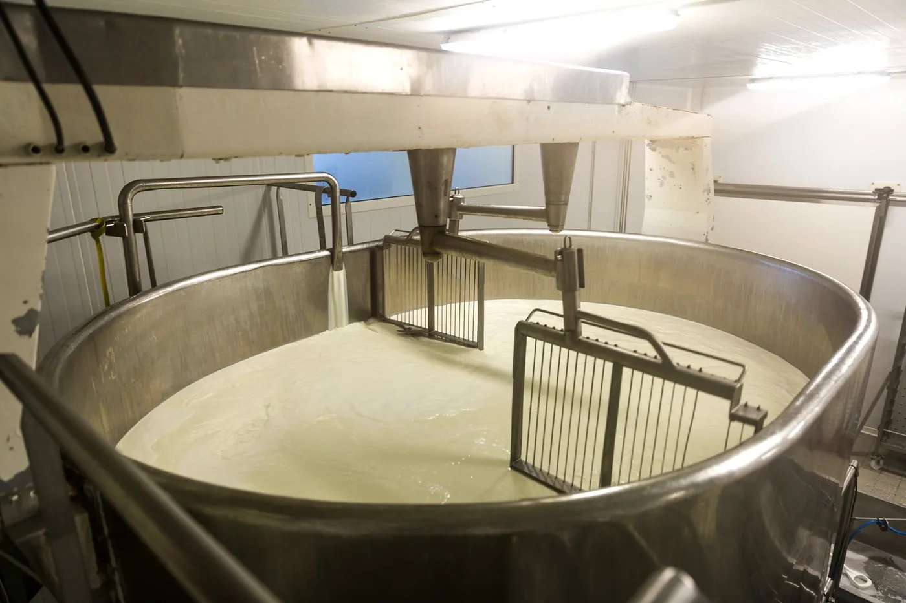

Brassage du lait
Une fabrication artisanale au cœur du Pays Basque. Lauburu est un des derniers ateliers indépendants qui travaille essentiellement à la main. L'équipe de 5 fromagers transforme le lait des fermes environnantes en meules de fromage.
Un savoir-faire transmis, geste après geste.